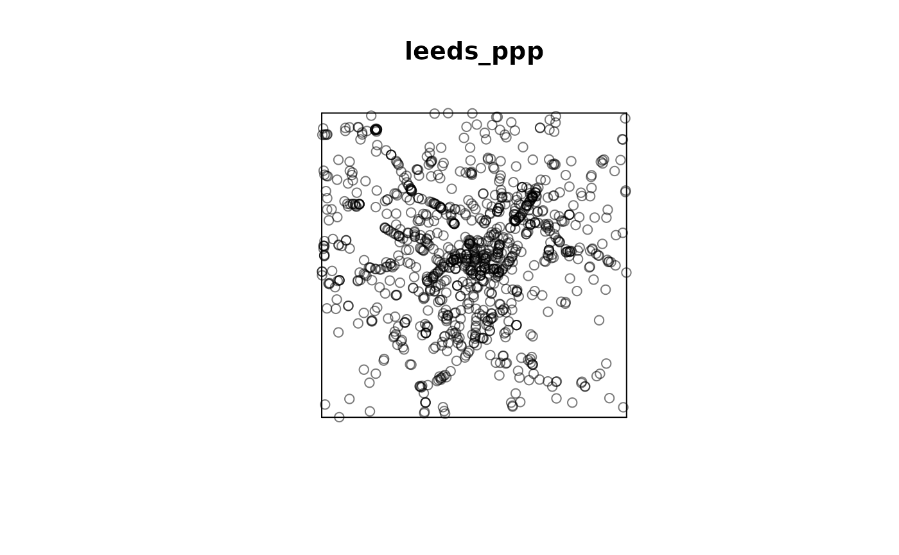

Download, read and format STATS19 data in one function.
get_stats19( year = NULL, type = "accidents", data_dir = get_data_directory(), file_name = NULL, format = TRUE, ask = FALSE, silent = FALSE, output_format = "tibble", ... )
Arguments
| year | Valid vector of one or more years from 1979 up until last year. |
|---|---|
| type | One of 'Accidents', 'Casualties', 'Vehicles'; defaults to 'Accidents'. Or any variation of to search the file names with such as "acc" or "accid". |
| data_dir | Parent directory for all downloaded files. Defaults to |
| file_name | The file name (DfT named) to download. |
| format | Switch to return raw read from file, default is |
| ask | Should you be asked whether or not to download the files? |
| silent | Boolean. If |
| output_format | A string that specifies the desired output format. The
default value is |
| ... | Other arguments that should be passed to |
Details
This function uses gets STATS19 data. Behind the scenes it uses
dl_stats19() and read_* functions, returning a
tibble (default), data.frame, sf or ppp object, depending on the
output_format parameter.
The function returns data for a specific year (e.g. year = 2017) or multiple
years (e.g. year = c(2017, 2018)).
Note: for years before 2009 the function may return data from more years than are
requested due to the nature of the files hosted at
data.gov.uk.
As this function uses dl_stats19 function, it can download many MB of data,
so ensure you have a sufficient disk space.
If output_format = "data.frame" or output_format = "sf" or output_format = "ppp" then the output data is transformed into a data.frame, sf or ppp
object using the as.data.frame() or format_sf() or format_ppp()
functions, respectively.
See examples.
See also
Examples
# \donttest{ # default tibble output x = get_stats19(2019)#>#>#>#>#>#>#>#> [1] "spec_tbl_df" "tbl_df" "tbl" "data.frame"x = get_stats19(2017, silent = TRUE)#># data.frame output x = get_stats19(2019, silent = TRUE, output_format = "data.frame")#>#> [1] "data.frame"#>#>#> # A tibble: 252,617 x 33 #> accident_index location_easting_osgr location_northing_os… longitude latitude #> <chr> <int> <int> <dbl> <dbl> #> 1 2017010001708 532920 196330 -0.0801 51.7 #> 2 2017010009342 526790 181970 -0.174 51.5 #> 3 2017010009344 535200 181260 -0.0530 51.5 #> 4 2017010009348 534340 193560 -0.0607 51.6 #> 5 2017010009350 533680 187820 -0.0724 51.6 #> 6 2017010009351 514510 172370 -0.354 51.4 #> 7 2017010009353 508640 181870 -0.435 51.5 #> 8 2017010009354 527880 181950 -0.158 51.5 #> 9 2017010009357 520940 192820 -0.254 51.6 #> 10 2017010009358 531430 178450 -0.108 51.5 #> # … with 252,607 more rows, and 28 more variables: police_force <chr>, #> # accident_severity <chr>, number_of_vehicles <int>, #> # number_of_casualties <int>, date <date>, day_of_week <chr>, time <chr>, #> # local_authority_district <chr>, local_authority_highway <chr>, #> # first_road_class <chr>, first_road_number <int>, road_type <chr>, #> # speed_limit <int>, junction_detail <chr>, junction_control <chr>, #> # second_road_class <chr>, second_road_number <int>, #> # pedestrian_crossing_human_control <chr>, #> # pedestrian_crossing_physical_facilities <chr>, light_conditions <chr>, #> # weather_conditions <chr>, road_surface_conditions <chr>, #> # special_conditions_at_site <chr>, carriageway_hazards <chr>, #> # urban_or_rural_area <chr>, #> # did_police_officer_attend_scene_of_accident <int>, #> # lsoa_of_accident_location <chr>, datetime <dttm># sf output x_sf = get_stats19(2017, silent = TRUE, output_format = "sf")#>#># sf output with lonlat coordinates x_sf = get_stats19(2017, silent = TRUE, output_format = "sf", lonlat = TRUE)#>#>#> Coordinate Reference System: #> User input: EPSG:4326 #> wkt: #> GEOGCRS["WGS 84", #> DATUM["World Geodetic System 1984", #> ELLIPSOID["WGS 84",6378137,298.257223563, #> LENGTHUNIT["metre",1]]], #> PRIMEM["Greenwich",0, #> ANGLEUNIT["degree",0.0174532925199433]], #> CS[ellipsoidal,2], #> AXIS["geodetic latitude (Lat)",north, #> ORDER[1], #> ANGLEUNIT["degree",0.0174532925199433]], #> AXIS["geodetic longitude (Lon)",east, #> ORDER[2], #> ANGLEUNIT["degree",0.0174532925199433]], #> USAGE[ #> SCOPE["unknown"], #> AREA["World"], #> BBOX[-90,-180,90,180]], #> ID["EPSG",4326]]#>#>#>#>#> Simple feature collection with 252543 features and 31 fields #> Geometry type: POINT #> Dimension: XY #> Bounding box: xmin: 73639 ymin: 10235 xmax: 655391 ymax: 1209512 #> Projected CRS: OSGB 1936 / British National Grid #> # A tibble: 252,543 x 32 #> accident_index longitude latitude police_force accident_severity #> * <chr> <dbl> <dbl> <chr> <chr> #> 1 2017010001708 -0.0801 51.7 Metropolitan Police Fatal #> 2 2017010009342 -0.174 51.5 Metropolitan Police Slight #> 3 2017010009344 -0.0530 51.5 Metropolitan Police Slight #> 4 2017010009348 -0.0607 51.6 Metropolitan Police Slight #> 5 2017010009350 -0.0724 51.6 Metropolitan Police Serious #> 6 2017010009351 -0.354 51.4 Metropolitan Police Slight #> 7 2017010009353 -0.435 51.5 Metropolitan Police Slight #> 8 2017010009354 -0.158 51.5 Metropolitan Police Slight #> 9 2017010009357 -0.254 51.6 Metropolitan Police Serious #> 10 2017010009358 -0.108 51.5 Metropolitan Police Serious #> # … with 252,533 more rows, and 27 more variables: number_of_vehicles <int>, #> # number_of_casualties <int>, date <date>, day_of_week <chr>, time <chr>, #> # local_authority_district <chr>, local_authority_highway <chr>, #> # first_road_class <chr>, first_road_number <int>, road_type <chr>, #> # speed_limit <int>, junction_detail <chr>, junction_control <chr>, #> # second_road_class <chr>, second_road_number <int>, #> # pedestrian_crossing_human_control <chr>, #> # pedestrian_crossing_physical_facilities <chr>, light_conditions <chr>, #> # weather_conditions <chr>, road_surface_conditions <chr>, #> # special_conditions_at_site <chr>, carriageway_hazards <chr>, #> # urban_or_rural_area <chr>, #> # did_police_officer_attend_scene_of_accident <int>, #> # lsoa_of_accident_location <chr>, datetime <dttm>, geometry <POINT [m]>if (requireNamespace("spatstat.core", quietly = TRUE)) { # ppp output x_ppp = get_stats19(2017, silent = TRUE, output_format = "ppp") # Multiple years get_stats19(c(2017, 2018), silent = TRUE, output_format = "ppp") # We can use the window parameter of format_ppp function to filter only the # events occurred in a specific area. For example we can create a new bbox # of 5km around the city center of Leeds leeds_window = spatstat.geom::owin( xrange = c(425046.1, 435046.1), yrange = c(428577.2, 438577.2) ) leeds_ppp = get_stats19(2017, silent = TRUE, output_format = "ppp", window = leeds_window) spatstat.geom::plot.ppp(leeds_ppp, use.marks = FALSE, clipwin = leeds_window) # or even more fancy examples where we subset all the events occurred in a # pre-defined polygon area # The following example requires osmdata package # greater_london_sf_polygon = osmdata::getbb( # "Greater London, UK", # format_out = "sf_polygon" # ) # spatstat works only with planar coordinates # greater_london_sf_polygon = sf::st_transform(greater_london_sf_polygon, 27700) # then we extract the coordinates and create the window object. # greater_london_polygon = sf::st_coordinates(greater_london_sf_polygon)[, c(1, 2)] # greater_london_window = spatstat.geom::owin(poly = greater_london_polygon) # greater_london_ppp = get_stats19(2017, output_format = "ppp", window = greater_london_window) # spatstat.geom::plot.ppp(greater_london_ppp, use.marks = FALSE, clipwin = greater_london_window) }#>#>#> Warning: some mark values are NA in the point pattern x#>#>#> Warning: some mark values are NA in the point pattern x#>#>#> Warning: some mark values are NA in the point pattern x#> Warning: some mark values are NA in the point pattern x#>#>#> Warning: 128936 points were rejected as lying outside the specified window#> Warning: some mark values are NA in the point pattern x
# }